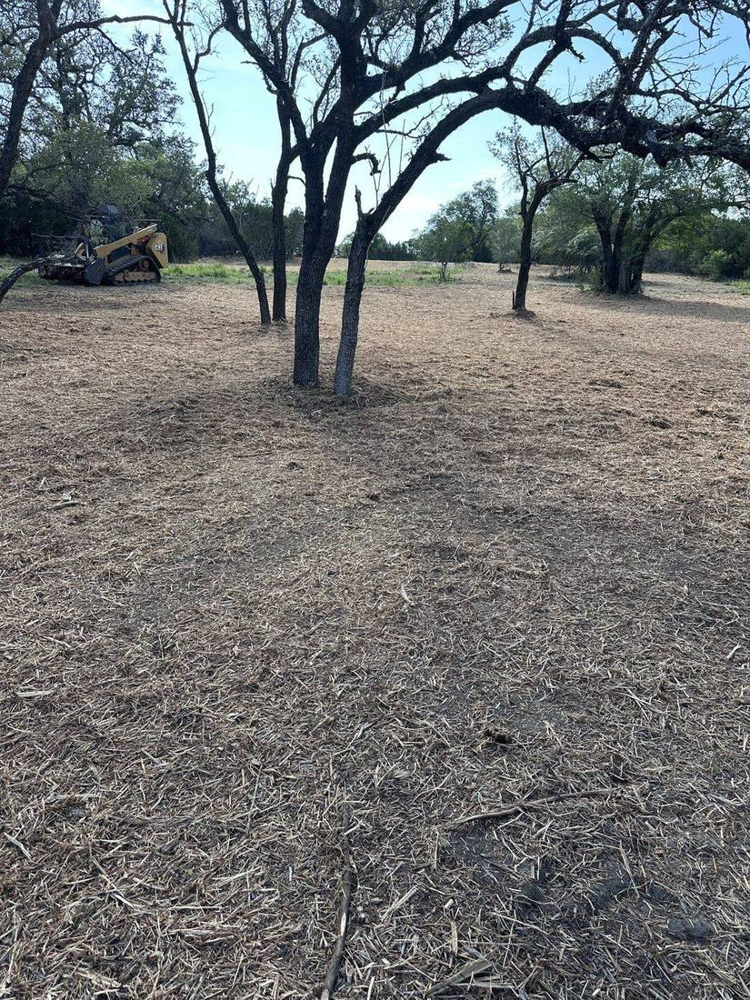

Cedar & Ashe Juniper Removal
Serving Spring Branch, Bulverde, New Braunfels, Canyon Lake, Boerne, San Antonio, San Marcos, the Texas Hill Country, and clients across Central Texas.
Cedar removal in Texas is what the Hill Country is built on. 9 Arrow mulches Ashe juniper (cedar) and brush in place — no burn piles, no hauling — reopening pasture, returning groundwater, and giving you back clean, usable land across Spring Branch, Boerne, and the surrounding Hill Country.
Ashe juniper is a heavy water user that crowds out native grasses and fuels cedar fever season. Managing juniper can improve range health and water availability. We clear it responsibly — taking the cedar, keeping your best trees.
Cutting, piling, and burning cedar is slow, risky, and often blocked by burn bans. Cedar mulching grinds it into a clean finish in a single pass. Learn more in our cedar & mesquite ranch guide.

FAQs
We grind cedar and Ashe juniper in place with high-horsepower forestry mulchers — no cutting, piling, or burning — leaving a clean mulch finish that lets native grass return.
Yes. Cedar is a heavy water user that shades out grass. Removing it reopens pasture and helps return groundwater to your land.
Yes — Boerne, Spring Branch, Bulverde, Blanco, and across the Texas Hill Country.
It does not get better.
Tell us about your property and your goal. You'll know the cost before we start.
Request an Estimate